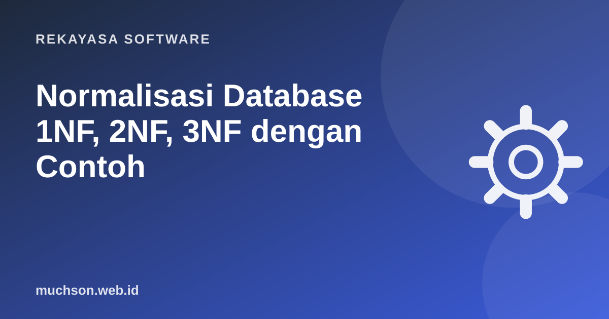

Beranda › Artikel › Rekayasa Software
Rekayasa SoftwareNormalisasi Database 1NF, 2NF, 3NF dengan Contoh
Normalisasi sering diajarkan sebagai deretan definisi yang membingungkan. Padahal idenya sederhana: simpan setiap fakta di satu tempat saja, supaya data tidak saling bertentangan. Kita akan memperbaiki satu tabel berantakan sampai rapi.

Tabel awal yang bermasalah
Sebuah kursus mencatat pendaftaran di satu spreadsheet:
| id_daftar | nama_siswa | hp_siswa | kelas | pengajar | hp_pengajar |
|---|---|---|---|---|---|
| 1 | Ani | 0812..., 0857... | Python Dasar, Web | Muchson | 0813... |
| 2 | Budi | 0819... | Python Dasar | Muchson | 0813... |
| 3 | Citra | 0821... | Scratch Anak | Rina | 0877... |
Tiga anomali yang muncul
1NF: satu sel, satu nilai
Bentuk normal pertama mensyaratkan setiap kolom berisi nilai atomik (tidak ada daftar dalam satu sel) dan tiap baris bisa diidentifikasi unik. Kolom hp_siswa dan kelas milik Ani berisi dua nilai, jadi melanggar.
| nama_siswa | kelas | pengajar | hp_pengajar |
|---|---|---|---|
| Ani | Python Dasar | Muchson | 0813... |
| Ani | Web | Muchson | 0813... |
| Budi | Python Dasar | Muchson | 0813... |
| Citra | Scratch Anak | Rina | 0877... |
Nomor HP siswa yang lebih dari satu dipindah ke tabel tersendiri (hp_siswa: id_siswa, nomor).
2NF: semua kolom bergantung pada kunci utuh
Misalkan kunci tabel di atas adalah gabungan (siswa, kelas). Kolom pengajar hanya bergantung pada kelas, bukan pada siswa. Ini ketergantungan parsial. Solusinya: pisahkan.
siswa(id_siswa PK, nama)
kelas(id_kelas PK, nama_kelas, id_pengajar)
pendaftaran(id_siswa FK, id_kelas FK, tanggal_daftar) -- PK gabungan3NF: tidak ada ketergantungan transitif
Di tabel kelas, hp_pengajar bergantung pada pengajar, bukan pada kelas. Ketergantungan "kelas → pengajar → hp" disebut transitif. Pindahkan data pengajar ke tabelnya sendiri.
CREATE TABLE pengajar (
id_pengajar SERIAL PRIMARY KEY,
nama TEXT NOT NULL,
hp TEXT
);
CREATE TABLE kelas (
id_kelas SERIAL PRIMARY KEY,
nama_kelas TEXT NOT NULL,
id_pengajar INT REFERENCES pengajar(id_pengajar)
);
CREATE TABLE siswa (
id_siswa SERIAL PRIMARY KEY,
nama TEXT NOT NULL
);
CREATE TABLE pendaftaran (
id_siswa INT REFERENCES siswa(id_siswa),
id_kelas INT REFERENCES kelas(id_kelas),
tanggal_daftar DATE DEFAULT current_date,
PRIMARY KEY (id_siswa, id_kelas)
);Sekarang nomor HP Muchson cukup diubah di satu baris, kelas baru bisa dibuat tanpa siswa, dan menghapus pendaftaran Citra tidak menghapus informasi pengajar.
Kapan denormalisasi justru tepat?
- Laporan dan analitik yang membaca jutaan baris: tabel ringkasan atau materialized view lebih cepat.
- Snapshot historis: harga di tabel pesanan harus disalin dari tabel produk, karena harga produk bisa berubah setelah transaksi.
- Kebutuhan baca yang sangat tinggi dengan cache atau kolom hitungan (misalnya jumlah_komentar).
Mulailah dari desain ternormalisasi (biasanya 3NF). Denormalisasi adalah keputusan sadar berdasarkan pengukuran, bukan titik awal.
Tanya jawab
Apakah perlu sampai BCNF atau 4NF?
Apakah normalisasi membuat query lebih lambat?
Bagaimana menggambar rancangannya?
Sumber dan bacaan lanjut
- E. F. Codd (1970): A Relational Model of Data for Large Shared Data Banks
- PostgreSQL Docs: Constraints (primary key dan foreign key)
- Database SQL vs NoSQL (artikel terkait)